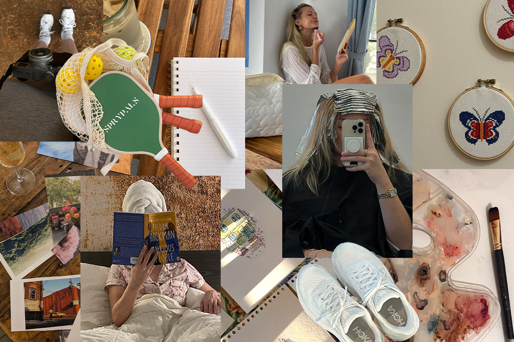

Hobbies
Hobbies y tiempo libre

Hobbies
El tiempo libre es una oportunidad para hacer actividades que disfrutamos y nos ayudan a desconectarnos de las obligaciones diarias. Los hobbies pueden ser muy variados, como escuchar música, dibujar, jugar videojuegos, leer o practicar algún deporte. Además de entretenernos, nos permiten desarrollar nuestra creatividad, descubrir nuevos intereses y disfrutar de nuestros momentos libres.
Tiempo libre
Durante nuestro tiempo libre podemos realizar diferentes actividades que nos gustan y nos ayudan a relajarnos. Encontrar un hobby puede ser una buena forma de aprender nuevas habilidades, desarrollar la creatividad y disfrutar momentos agradables.